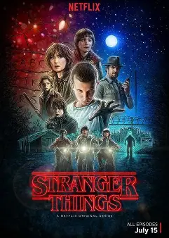
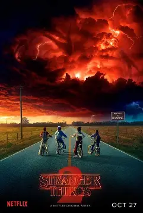
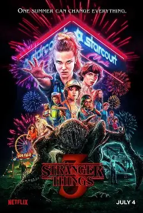
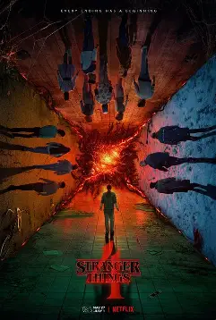
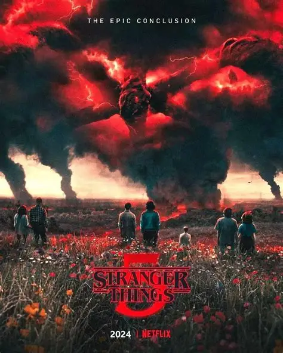

2016年7月15日（美国），共8集
印第安纳州霍金斯小镇的男孩威尔·拜尔斯神秘失踪，他的母亲乔伊斯坚信儿子还活着，开始疯狂寻找线索。小镇警长霍珀也介入调查，发现此事与当地的霍金斯国家实验室有关。与此同时，拥有超能力的女孩十一逃离实验室，偶遇威尔的朋友迈克、达斯汀和卢卡斯，三人决定帮助十一隐藏身份，并一起寻找威尔。最终众人发现，威尔被吸入了一个平行世界——“颠倒世界”，而实验室正在隐藏着超自然实验的秘密，众人联手将威尔救出，但颠倒世界的威胁并未消失。

2017年10月27日（美国），共9集
威尔被救出后，身体里仍残留着颠倒世界的“阴影”，能够感知到颠倒世界的动向，甚至被其控制。此时，颠倒世界的怪物“夺心魔”开始通过威尔影响现实世界，霍金斯小镇再次陷入危机。十一在得知自己的身世后，开始寻找母亲的下落，并结识了同样拥有超能力的“姐妹”。迈克等人、霍珀警长、乔伊斯一家人再次联手，不仅要对抗夺心魔，还要阻止实验室的秘密被进一步泄露，最终成功净化了威尔体内的阴影，但十一的超能力也暂时消失。

2019年7月4日（美国），共8集
霍金斯小镇迎来了夏天，购物中心成为了小镇居民的新聚集地。但平静之下，危险正在酝酿，苏联人在霍金斯地下秘密建立了实验室，试图重新打开通往颠倒世界的大门。十一的超能力逐渐恢复，她与迈克的感情也进入了新阶段。达斯汀从夏令营带回了新发现，众人逐渐发现了苏联人的阴谋，同时颠倒世界的怪物“噬肉者”也通过大门进入现实世界。最终，众人联手摧毁了苏联人的实验室，关闭了大门，但霍珀警长疑似牺牲，十一被迫与乔伊斯一家离开霍金斯小镇。

2022年5月27日（上部）、7月1日（下部），共9集
十一随乔伊斯一家搬到了加州，却难以适应新的生活，还遭遇了校园霸凌。与此同时，霍金斯小镇再次发生离奇命案，凶手疑似与超自然力量有关。众人发现，这一切都是颠倒世界的新怪物“维克纳”所为，而维克纳与霍金斯实验室的过往有着密切联系。霍珀警长并未牺牲，而是被苏联人囚禁，他在狱中策划逃脱。十一在得知真相后，重新找回了强大的超能力，众人分处两地，联手对抗维克纳和颠倒世界的威胁，最终暂时击退维克纳，但颠倒世界的裂缝已经蔓延到霍金斯小镇，第5季将迎来最终决战。

2025年11月26日（上部）、12月26日（中部）、2026年1月1日（下部），共8集
作为系列最终季，将承接第4季的剧情，讲述霍金斯小镇与颠倒世界的最终决战，所有角色将回归，解开所有未解之谜，为《怪奇物语》系列画上圆满的句号。